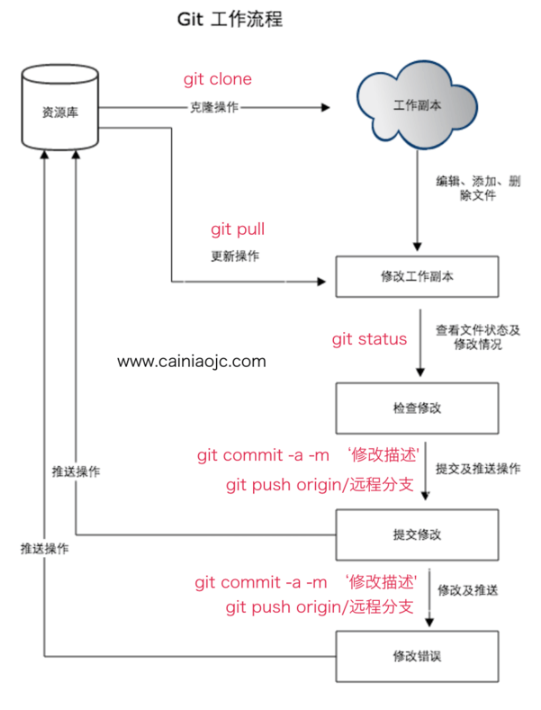
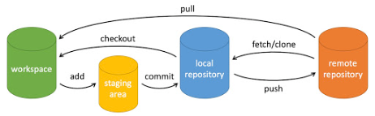
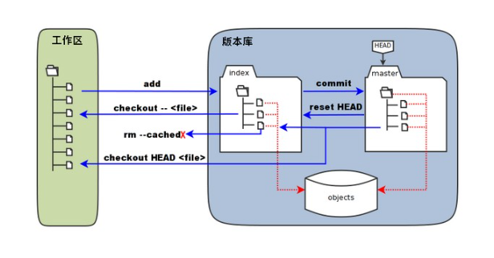

Git教程
Git教程¶
Git 安装¶
使用 Git 需要安装 Git 客户端。Git 支持 Linux、Unix、Mac和 Windows 等几乎所有平台。
Git 各平台安装包下载地址为：http://git-scm.com/downloads。
1. Linux 平台上安装 git¶
各 Linux 系统可以使用其安装包管理工具（apt-get、yum 等）进行安装。
由于Git 的工作需要调用 curl，zlib，openssl，expat，libiconv 等库的代码，需要先安装这些依赖工具。
1）Centos/RedHat yum 安装 git¶
使用 yum 在 Centos/RedHat 系统的安装命令为：
如果安装过程中，系统缺失依赖包，可以先安装 git 的依赖包：
| Bash | |
|---|---|
2）Debian/Ubuntu apt-get 安装 git¶
使用 apt-get 在 Debian/Ubuntu 系统的安装命令为：
如果安装过程中，系统缺失依赖包，可以先安装 git 的依赖包：
| Bash | |
|---|---|
3）Centos/RedHat 源码安装 git¶
我们可以使用源码包安装自己需要的版本，源码包下载地址：https://mirrors.edge.kernel.org/pub/software/scm/git/。
4）Debian/Ubuntu 源码安装 git¶
我们可以使用源码包安装自己需要的<font style="color:rgb(199, 37, 78);background-color:rgb(249, 242, 244);">git版本</font>，源码包下载地址：https://mirrors.edge.kernel.org/pub/software/scm/git/
2. Windows 平台上安装 git¶
在 Windows 平台上安装 Git 可以使用 msysGit，msysGit 项目提供了安装包，可以到 GitHub 的页面上下载 exe 安装文件并运行：
安装包下载地址：https://gitforwindows.org/
如果官网下载慢，可以用国内的镜像：https://npm.taobao.org/mirrors/git-for-windows/。
完成安装之后，就可以使用命令行的 git 工具（已经自带了 ssh 客户端）了，另外还有一个图形界面的 Git 项目管理工具。
在开始菜单里找到"Git"->"Git Bash"，会弹出 Git 命令窗口，你可以在该窗口进行 Git 操作。
3. Mac 平台上安装 git¶
1）命令行方式¶
使用 Homebrew 安装 git 的命令如下：
| Bash | |
|---|---|
2）图形化方式¶
在 Mac 平台上安装 Git 最容易的当属使用图形化的 Git 安装工具，下载地址为：
http://sourceforge.net/projects/git-osx-installer/
Git 配置¶
Git 提供了一个叫做 git config 的工具，专门用来配置或读取相应的工作环境变量。
这些环境变量，决定了 Git 在各个环节的具体工作方式和行为。这些变量可以存放在以下三个不同的地方：
- /etc/gitconfig 文件：全局配置，系统中对所有用户都生效的配置。若使用 git config 时用 --system 选项，读写的就是这个文件。
- ~/.gitconfig 文件：用户目录下的配置文件只对该用户生效。若使用 git config 时用 --global 选项，读写的就是这个文件。
- 当前项目的 Git 目录中的配置文件（也就是工作目录中的 .git/config 文件）：这里的配置仅仅针对当前项目有效。每一个级别的配置都会覆盖上层的相同配置，所以 .git/config 里的配置会覆盖 /etc/gitconfig 中的同名变量。
在 Windows 系统上，Git 会找寻用户主目录下的 .gitconfig 文件。主目录即 $HOME 变量指定的目录，一般都是 C:\Documents and Settings$USER。
此外，Git 还会尝试找寻 /etc/gitconfig 文件， Git 装在什么目录，就以此作为根目录来定位。
1. 用户信息¶
配置个人的用户名称和电子邮件地址：
| Bash | |
|---|---|
如果用了 --global 选项，那么更改的配置文件就是位于你用户主目录下，以后你所有的项目都会默认使用这里配置的用户信息。
如果要在某个特定的项目中使用不同的名字或者邮件地址，只要去掉 --global 选项重新配置即可，新的配置保存在当前项目的 .git/config 文件里。
2. 文本编辑器¶
Git默认使用 Vi 或者 Vim文本编辑器。如果你有其他偏好，比如 Emacs 的话，可以重新设置：:
| Bash | |
|---|---|
3. 差异分析工具¶
还有一个比较常用的是，在解决合并冲突时使用哪种差异分析工具。比如要改用 vimdiff 的话：
| Bash | |
|---|---|
Git 可以理解 kdiff3，tkdiff，meld，xxdiff，emerge，vimdiff，gvimdiff，ecmerge，和 opendiff 等合并工具的输出信息。
当然，你也可以指定使用自己开发的工具，具体怎么做可以参阅第七章。
4. 查看配置信息¶
要检查已有的配置信息，可以使用 git config --list 命令：
有时候会看到重复的变量名，那就说明它们来自不同的配置文件（比如 /etc/gitconfig 和 ~/.gitconfig），Git 实际采用的是最后一个。
这些配置我们也可以在 ~/.gitconfig 或 /etc/gitconfig 看到，如下所示：
| Bash | |
|---|---|
显示内容如下所示：
也可以直接查看某个环境变量的设定，只要把特定的名字跟在后面即可，像这样：
Git 工作流程¶
团队协作的开发过程中，大家需要遵循一个合理、清晰的 Git使用流程，否则随着项目资源的不断提交，项目很快就会变得难以协调和维护。
以下为我们通常使用 Git 的工作流程。
1. Git 基本工作流程¶
- 克隆远程资源到本地目录，作为工作目录。
- 在本地的克隆资源上添加、修改或删除文件。
- 如果远程资源有修改，需要同步远程的内容，更新本地的文件。
- 提交修改前，查看修改情况。
- 添加修改到缓冲区，提交修改到本地版本库。
- 提交修改后，将本地版本库推送到远程 Git 服务器。
2. Git 工作流程图¶

3. Git 常用命令¶
- git clone：克隆远程资源。
- git pull：拉取远程文件到本地。
- git status：查看修改情况。
- git add：添加修改到缓冲区。
- git commit：提交修改到工作区。
- git push：将本地的修改推送到远程 Git 服务器。
- git branch：查看当前使用的分支。
- git checkout：切换当前使用的分支。
Git init clone 创建仓库¶
我们使用 Git 进行项目版本的管理，首先需要创建一个 Git 仓库。
有两种方式可以创建版本库：使用 git init 初始化一个新仓库以及使用git clone 克隆一个已存在的仓库。
1. git init 初始化仓库¶
我们可以使用一个已经存在的目录作为 Git 仓库。Git 使用 git init 命令来初始化一个 Git 仓库。
| Bash | |
|---|---|
在执行完成 git init 命令后，Git 仓库会生成一个 .git 目录，该目录包含了资源的所有元数据。
也可以使用指定的目录作为 Git 仓库。
| Bash | |
|---|---|
初始化后，会在 myproject 目录下会出现一个名为 .git 的目录，所有 Git 需要的数据和资源都存放在这个目录中。
如果当前目录下有几个文件想要纳入版本控制，需要先用 git add 命令告诉 Git 开始对这些文件进行跟踪，然后提交：
以上命令将目录下以 .c 结尾及 README 文件提交到仓库中。
2. git clone 克隆仓库¶
我们使用 git clone 从现有 Git 仓库中复制项目。
克隆仓库的命令格式为：
git clone
如果我们需要克隆到指定的目录，可以使用以下命令格式：
| Bash | |
|---|---|
参数说明：
- repo:Git 仓库。
- directory:本地目录。
比如，要克隆 Ruby 语言的 Git 代码仓库 Grit，可以用下面的命令：
| Bash | |
|---|---|
执行该命令后，会在当前目录下创建一个名为grit的目录，其中包含一个 .git 的目录，用于保存下载下来的所有版本记录。
如果要自己定义要新建的项目目录名称，可以在上面的命令末尾指定新的名字：
| Bash | |
|---|---|
3. Git 仓库的配置¶
git 的设置使用 git config 命令。
显示当前的 git 配置信息：
| Bash | |
|---|---|
编辑 git 配置文件:$ git config -e ## 针对当前仓库
或者：
$ git config -e --global ## 针对系统上所有仓库
设置提交代码时的用户信息：
| Bash | |
|---|---|
如果去掉 --global 参数只对当前仓库有效。
Git 基本操作¶
Git 的主要工作就是创建和保存项目的快照及以及对快照进行对比。
Git 常用的是以下 6 个命令：git clone、git add 、git commit、git pull、git push、git checkout。

说明：
- workspace：工作区
- staging area：暂存区/缓存区
- local repository：版本库或本地仓库
- remote repository：远程仓库
一个简单的操作步骤：
- git init - 初始化仓库。
- git add . - 添加文件到暂存区。
- git commit - 将暂存区内容添加到仓库中。
1. 创建仓库¶
使用 git 对项目进行版本管理，首先要创建 git 仓库。
下表列出了 git 创建仓库的命令：
| 命令 | 说明 |
|---|---|
| git init | 初始化仓库 |
| git clone | 拷贝一份远程仓库，也就是下载一个项目。 |
2. 修改提交¶
Git 的工作就是创建和保存你的项目的快照及与之后的快照进行对比。
下表列出了有关创建与提交你的项目的快照的命令：
| 命令 | 说明 |
|---|---|
| git add | 添加文件到仓库 |
| git status | 查看仓库当前的状态，显示有变更的文件。 |
| git diff | 比较文件的不同，即暂存区和工作区的差异。 |
| git commit | 提交暂存区到本地仓库。 |
| git reset | 回退版本。 |
| git rm | 删除工作区文件。 |
| git mv | 移动或重命名工作区文件。 |
3. 远程操作¶
| 命令 | 说明 |
|---|---|
| git remote | 远程仓库操作 |
| git fetch | 从远程获取代码库 |
| git pull | 下载远程代码并合并 |
| git push | 上传远程代码并合并 |
4. 查看日志¶
| 命令 | 说明 |
|---|---|
| git log | 查看历史提交记录 |
| git blame |
以列表形式查看指定文件的历史修改记录 |
Git branch 分支管理¶
每一种版本控制系统都以某种形式支持分支，使用分支就可以从开发主线上分离开来，在不影响主线的同时继续工作。 Git 的分支管理包括：查看分支、创建分支、切换分支、删除分支以及合并分支等命令。
1. 查看分支¶
查看分支的命令：
git branch
git branch 会列出本地的所有分支。
例如：
以上结果显示本地共有两个分支，分别为 master 和 develop 分支，其中前面有 ”*“ 的 master 分支为当前分支。
当你执行 git init 初始化仓库的时候，默认情况下 Git 就会为你创建 master 分支。
2. 创建分支¶
创建分支的命令：
| Bash | |
|---|---|
例如：
| Bash | |
|---|---|
以上命令会创建一个 hotfix 分支。
使用创建分支命令后，当前分支不会自动切换到新创建的分支。
3. 切换分支¶
| Bash | |
|---|---|
例如：
运行命令后，当前分支切换到了 hotfix 分支。
4. 删除分支¶
删除分支命令：
git branch -d (branchname)
例如：我们要删除 hotfix 分支：
| Bash | |
|---|---|
hotfix 分支已经被删除。
5. 合并分支¶
某分支修改完成后，一般会将它合并回到主分支。
使用以下命令将其它分支合并到当前分支中：
| Bash | |
|---|---|
我们在 hotfix 分支上创建一个了文件 test.txt，并将文件提交。
合并完后就可以删除 hotfix 分支:
Git log 查看提交历史¶
查看 Git 提交历史常用两个命令：
- git log - 查看总体历史提交记录。
- git blame
- 查看指定文件的历史修改记录。
1. git log 查看提交记录¶
在使用 Git 提交了若干更新之后，又或者克隆了某个项目，想回顾下提交历史，我们可以使用 git log 命令查看。
针对我们前一章节的操作，使用 git log 命令列出历史提交记录如下：
我们可以用 --oneline 选项来查看历史记录的简洁的版本。
| Bash | |
|---|---|
这告诉我们的是，此项目的开发历史。
我们还可以用 --graph 选项，查看历史中什么时候出现了分支、合并。以下为相同的命令，开启了拓扑图选项：
| Bash | |
|---|---|
现在我们可以更清楚明了地看到何时工作分叉、又何时归并。
你也可以用 --reverse 参数来逆向显示所有日志。
| Bash | |
|---|---|
如果只想查找指定用户的提交日志可以使用命令：git log --author , 例如，比方说我们要找 Git 源码中 Linus 提交的部分：
| Bash | |
|---|---|
如果你要指定日期，可以执行几个选项：--since 和 --before，但是你也可以用 --until 和 --after。
例如，如果我要看 Git 项目中三周前且在四月十八日之后的所有提交，我可以执行这个（我还用了 --no-merges 选项以隐藏合并提交）：
更多 git log 命令可查看：http://git-scm.com/docs/git-log。
2. git blame 查看提交记录¶
如果要查看指定文件的修改记录可以使用 git blame 命令，格式如下：git blame
git blame 命令是以列表形式显示修改记录，如下范例：
| Bash | |
|---|---|
Git tag 标签管理¶
当开发工作达到一个重要的阶段，我们希望永远记住那个特别的提交快照，就可以使用 git tag 给它打上标签。
1. Git 添加标签¶
添加标签的语法：
| Bash | |
|---|---|
例如：
| Bash | |
|---|---|
当你执行 git tag -a 命令时，Git 会打开你的编辑器，让你写一句标签注解，就像你给提交写注解一样。
现在，注意当我们执行 git log --decorate 时，我们可以看到我们的标签了：
| Bash | |
|---|---|
如果我们忘了给某个提交打标签，又将它发布了，我们可以给它追加标签。
例如，假设我们发布了提交 85fc7e7，但是那时候忘了给它打标签。
我们现在也可以补打标签：
| Bash | |
|---|---|
2. Git 查看标签¶
如果我们要查看所有标签可以使用以下命令：
| Bash | |
|---|---|
例如：
3. Git 指定标签信息¶
| Bash | |
|---|---|
例如：
| Bash | |
|---|---|
4. Git 删除标签¶
| Bash | |
|---|---|
例如：
Git 工作区、暂存区和版本库¶
1. 什么是工作区、暂存区和版本库¶
- Working Tree 工作区：当前的工作区域，也就是我们项目所在的目录。
- Index/Stage 暂存区：一般存放在 .git 目录下的 index 文件（.git/index）中，所以我们把暂存区有时也叫作索引（index）。当我们执行 git add 后，会将这些改变的文件內容加入 index 中。
- Repository 版本库：工作区有一个隐藏目录 .git，用来存放 Git 的版本库，也就是使用 git commit 提交后的结果
2. 工作区、暂存区和版本库的关系¶
下面这个图展示了工作区、版本库中的暂存区和版本库之间的关系：

- 图中左侧为工作区，右侧为版本库。在版本库中标记为 "index" 的区域是暂存区（stage/index），标记为 "master" 的是 master 分支所代表的目录树。
- 图中我们可以看出此时 "HEAD" 实际是指向 master 分支的一个"游标"。所以图示的命令中出现 HEAD 的地方可以用 master 来替换。
- 图中的 objects 标识的区域为 Git 的对象库，实际位于 ".git/objects" 目录下，里面包含了创建的各种对象及内容。
- 当对工作区修改（或新增）的文件执行 git add 命令时，暂存区的目录树被更新，同时工作区修改（或新增）的文件内容被写入到对象库中的一个新的对象中，而该对象的ID被记录在暂存区的文件索引中。
- 当执行提交操作（git commit）时，暂存区的目录树写到版本库（对象库）中，master 分支会做相应的更新。即 master 指向的目录树就是提交时暂存区的目录树。
- 当执行 git reset HEAD 命令时，暂存区的目录树会被重写，被 master 分支指向的目录树所替换，但是工作区不受影响。
- 当执行 git rm --cached
命令时，会直接从暂存区删除文件，工作区则不做出改变。 - 当执行 git checkout . 或者 git checkout --
命令时，会用暂存区全部或指定的文件替换工作区的文件。这个操作很危险，会清除工作区中未添加到暂存区的改动。 - 当执行 git checkout HEAD . 或者 git checkout HEAD
命令时，会用 HEAD 指向的 master 分支中的全部或者部分文件替换暂存区和以及工作区中的文件。这个命令也是极具危险性的，因为不但会清除工作区中未提交的改动，也会清除暂存区中未提交的改动。
Git 服务器搭建¶
由于 Git 是一个分布式版本控制系统，所以任何一台安装了 Git 的机器都可以作为远程仓库，提供给项目协助者公共使用。
我们将以 Centos 服务器为例搭建 Git 远程仓库。
1、安装Git¶
首先需要在 Centos 服务器上安装 Git。
| Bash | |
|---|---|
2、创建 Git 组和用户¶
接下来我们创建一个 git 用户组和用户，用来运行 git 服务。
3、创建证书登录¶
收集所有需要登录的用户的公钥，公钥位于id_rsa.pub文件中，把我们的公钥导入到/home/git/.ssh/authorized_keys文件里，一行一个。
如果没有该文件创建它：
| Bash | |
|---|---|
4、初始化 Git 仓库¶
首先我们选定一个目录作为Git仓库，假定是/home/gitrepo/cainiaoplus.git，在/home/gitrepo目录下输入命令：
| Bash | |
|---|---|
以上命令创建一个 Git 空仓库，服务器上的 Git 仓库通常都以.git结尾。然后，把仓库所属用户改为git：
| Bash | |
|---|---|
5、使用自建仓库¶
假定 192.168.1.100 为 Git 服务器 ip，我们就可以使用该服务器克隆项目了。
| Bash | |
|---|---|
git init 命令¶
git init 命令用来创建一个新的 Git 仓库。
git init 命令既可以用来初始化一个新的空仓库，也可以把一个已经存在的，没有版本控制的仓库转成 Git 仓库。
执行 git init 命令会在指定工程的根目录下创建一个 .git 的子文件夹。除了 .git 子文件夹，工程的其它文件都不会改变。
1. git init 命令的语法¶
| Bash | |
|---|---|
1）git init¶
把当前目录变成一个 Git 仓库。
2）git init directory¶
在指定的目录下创建 Git 仓库。执行这个命令将会创建一个叫 directory 的新文件夹，在这个文件夹里只有 .git 子文件夹。
3）git init --bare directory¶
初始化一个没有工作文件夹的空的 Git 仓库。用来共享的 Git 仓库应该始终使用 --bare 选项来创建。通常情况下，用 --bare 选项初始化的仓库以 .git 作为后缀。举个例子，使用 --bare 选项创建的 project 仓库应该叫 project.git。
4）有无 --bare 的异同¶
比较一下 git init directory 和 git init --bare directory：
首先执行 git init linux:
接着执行git init --bare bsd:
可以看到所有的文件信息都直接创建在bsd目录下，而没有创建在.git文件夹下。
2. git init 命令的范例¶
例如我们在当前目录下创建一个名为 cainiaoplus 的项目：
| Bash | |
|---|---|
在项目目录 cainiaoplus 中生成了 .git 子目录，这就是项目的 Git 仓库，有关项目的快照数据全部存放在 .git 目录中。
.git 默认是隐藏的，可以用 ls -a 命令查看：
git clone 命令¶
git clone 用于克隆一个远程仓库到本地，以便在本地查看或者修改。
1. git clone 命令的语法¶
git clone [url] [directory]
- [url] 是要克隆的远程仓库地址。
- [directory] 是本地的存储目录。如果未指定 directory，就会使用 url 最后一个 / 之后的项目名称。
2. git clone 命令的范例¶
克隆 Github 上的项目 https://github.com/owenliang/go-websocket：
| Bash | |
|---|---|
拷贝完成后，在当前目录下会生成一个 go-websocket 目录：
查看所有文件和目录，包括隐藏的文件或目录。
| Bash | |
|---|---|
默认情况下，Git 会按照你提供的 url 所指向的项目的名称创建你的本地项目目录。
通常就是该 URL 最后一个 / 之后的项目名称。如果你想要一个不一样的名字，你可以在该命令后加上你想要的目录名称。
例如，以下范例拷贝远程 git 项目，本地项目名为 myproject：
| Bash | |
|---|---|
拷贝完成后，在当前目录下会生成一个 go-myproject 目录。
git add 命令¶
git add 命令用于把修改后的文件添加到暂存区。
1. git add 命令的语法¶
1）添加一个或多个文件到暂存区¶
| Bash | |
|---|---|
2）添加指定目录到暂存区，包括子目录¶
| Bash | |
|---|---|
3）添加当前目录下的所有文件到暂存区¶
| Bash | |
|---|---|
2. git add 命令的范例¶
以下范例我们添加两个文件：
| Bash | |
|---|---|
git status 命令用于查看项目的当前状态。
接下来我们执行 git add 命令来添加文件：
| Bash | |
|---|---|
再次执行 git status，就可以看到这两个文件已经添加。
在项目中，我们经常使用 git add . 命令来添加新的文件或者修改过的文件。
git status 命令¶
git status 命令用于查看工作目录和暂存区的状态。
使用 git status 命令能够查看仓库中文件或者目录的变动情况，包括新建、修改或者删除等状态。
git status 不显示已经commit到项目历史中去的信息。
1. git status 命令的语法¶
| Bash | |
|---|---|
其中 -s 参数用来获得简短输出结果。
2. git status 命令的范例¶
查看当前仓库的变动情况：
| Bash | |
|---|---|
使用 -s 参数来获得简短的输出结果：
其中AM 状态的意思是这个文件在我们将它添加到缓存之后又有改动。
git diff 命令¶
git diff 命令用于比较 git 工作区、暂存区和版本库中文件内容的差异。
1. 查看工作区与暂存区的差异¶
git diff 不加参数，默认比较工作区与暂存区的所有文件的差异。
| Bash | |
|---|---|
查看文件 filename 在工作目录与暂存区的差异。若是还没 add 进暂存区，则查看文件自身修改先后的差异。
| Bash | |
|---|---|
2. 查看暂存区与 Git 仓库的差异¶
查看已经 add 进暂存区可是还没有 commit 的内容同最近一次 commit 时的内容的差异。
| Bash | |
|---|---|
也能够指定仓库版本：
> git diff --cached
3. 查看工做目录与 Git 仓库的差异¶
查看工做目录同Git仓库指定 commit 的内容的差异。
| Bash | |
|---|---|
4. 查看 Git 仓库与 Git 仓库的差异¶
查看 Git 仓库任意两次 commit 之间的差异。
| Bash | |
|---|---|
5. 常用约定和参数¶
以上命令能够不指定
- HEAD 表示最近一次 commit
- HEAD^ 表示上次提交
- HEAD~100 表示上100次提交
6. diff 文件的解释¶
使用 git diff 命令，会产生 diff 格式的输出。例如：
| Bash | |
|---|---|
以上是 git diff 命令产生的比较的结果，分析如下：
- 表明修改前的文件，+ 表明修改后的文件。
@@ 后面的 第一个 6,16 指的是下边列出的内容是修改前的文件从第 6 行开始，连续 16 行。第二个 6,16 只的是下边的内容是修改后的文件从第 6 行开始，连续 16 行。
git commit 命令¶
git commit 命令将暂存区内容添加到本地仓库中。
1. git commit 命令的语法¶
1）提交暂存区的所有内容到本地本地仓库¶
| Bash | |
|---|---|
其中[message]可以是一些备注信息。
2）提交暂存区的指定文件到本地仓库¶
| Bash | |
|---|---|
3）直接提交暂存区的内容到本地仓库¶
| Bash | |
|---|---|
-a 参数设置修改文件后不需要执行 git add 命令，直接来提交
2. 设置提交代码时的用户信息¶
提交代码前，我们需要先设置提交的用户信息，包括用户名和邮箱：
| Bash | |
|---|---|
如果去掉 --global 参数只对当前仓库有效。
3. git commit 命令的范例¶
我们对 hello.php 的内容进行改动，然后将暂存区的内容修改，提交到本地仓库中。
我们使用 -m 选项，在命令行中提供本次提交的注释。
| Bash | |
|---|---|
现在我们已经记录了快照。如果我们再执行 git status:
以上输出说明我们在最近一次提交之后，没有做任何改动，是一个 "working directory clean"，翻译过来就是干净的工作目录。
如果你没有设置 -m 选项，Git 会尝试为你打开一个编辑器以填写提交信息。 如果 Git 在你对它的配置中找不到相关信息，默认会打开 vim。屏幕会像这样：
| Bash | |
|---|---|
如果你觉得 git add 提交缓存的流程太过繁琐，Git 也允许使用 -a 选项跳过这一步。
| Bash | |
|---|---|
我们先修改 hello.php 文件为以下内容：
再执行 git commit 命令：
| Bash | |
|---|---|
git rm 命令¶
git rm 命令用于删除文件。
1. git 本地数据管理的分区¶
git 的本地数据管理分为三个区：
- 工作区（Working Directory）：是可以直接编辑的地方。
- 暂存区（Stage/Index）：数据暂时存放的区域。
- 版本库（commit History）：存放已经提交的数据。
工作区的文件 git add 后到暂存区，暂存区的文件 git commit 后到版本库。
2. shell rm 命令¶
用于删除工作区的文件。
| Bash | |
|---|---|
使用 shell rm 命令删除工作区文件，然后查看状态：
| Bash | |
|---|---|
shell rm 命令只是删除了工作区的文件，并没有删除版本库的文件。如果要删除版本库文件，还需要执行下面的命令：
或者
| Bash | |
|---|---|
test.txt 文件从工作区和版本库中全部删除。
3. git rm 命令¶
删除工作区文件，并且将这次删除放入暂存区。
注意：要删除的文件必须没有经过修改，也就是说和当前版本库文件的内容相同，否则将会失败。
执行删除命令：
查看当前状态（成功删除了工作区文件，并且将这次删除放入暂存区。）：
| Bash | |
|---|---|
然后提交到版本库：
| Bash | |
|---|---|
成功删除了版本库中 test.txt 文件。
如果文件修改过内容，执行结果如下：
| Bash | |
|---|---|
4. git rm -f 命令¶
强制删除工作区和暂存区文件，并且将这次删除放入暂存区。
注意：要删除的文件无论修改过还是未修改过，无论是在工作区还是暂存区，都会被强制删除。
查看状态（成功删除工作区和暂存区文件，并且将这次删除放入暂存区）：
| Bash | |
|---|---|
然后提交到版本库：
| Bash | |
|---|---|
成功删除了工作区、暂存区和版本库的文件。
5. git rm --cached 命令¶
删除暂存区文件，但保留工作区的文件，并且将这次删除放入暂存区。
执行删除命令：
查看状态（成功删除暂存区文件，保留工作区文件，并且将这次删除放入暂存区，注意这里文件取消了跟踪）。
| Bash | |
|---|---|
然后提交到版本库：
| Bash | |
|---|---|
删除了暂存区和版本库的文件，但保留了工作区的文件。
如果文件有修改并 git add 到暂存区，再执行 git rm --cached 和 git commit，那么保留的工作区文件是修改后的文件，同时暂存区的修改文件和版本库的文件也被删了。
git mv 命令¶
git mv 命令用于移动或重命名一个文件、目录或软连接。
1. git mv 命令的语法¶
git mv [file] [newfile]
如果新但文件名已经存在，但还是要重命名它，可以使用 -f 参数：
git mv -f [file] [newfile]
git mv 命令既可以重命名缓存区的文件，也可以重命名版本库的文件。
git mv 命令执行后的结果存放到缓冲区，需要执行 git commit 提交到版本库。
2. git mv 命令的范例¶
我们可以添加一个 README 文件：
| Bash | |
|---|---|
然后对其重命名:
git remote 命令¶
git remote 命令用于一些对远程仓库的操作。
1. git remote 命令¶
git remote 命令可以查看当前配置中有哪些远程仓库，列出每个远程库的简短名字。
在克隆完某个项目后，我们可以看到一个名为 origin 的远程库，git 默认使用这个名字来标识克隆的原始仓库。
我们克隆一个远程仓库项目，查看一下本地配置中的远程仓库列表：
| Bash | |
|---|---|
其中：origin 是远程仓库的默认别名，在很多命令中可以直接代替远程仓库的 Url 使用。
2. git remote -v 命令¶
列出每个远程库的详细信息，在每一个名字后面列出其远程 url。
我们查看一下本地配置中的远程仓库详细列表：
| Bash | |
|---|---|
3. git remote add 命令¶
用于添加本地配置中的一个远程仓库。
| Bash | |
|---|---|
[shortname] 为远程仓库的别名，比如 origin 是系统默认的远程仓库别名。
[url] 为远程仓库的 Url 地址，比如 https://github.com/owenliang/go-websocket.git。
我们添加一个远程仓库，别名为 myproject：
4. git remote rm 命令¶
用于删除本地配置中的一个远程仓库。
| Bash | |
|---|---|
[shortname] 为远程仓库的别名，比如 myproject。
我们删除本地配置中的一个远程仓库 myproject：
| Bash | |
|---|---|
5. git remote rename 命令¶
用于重命名本地配置中的一个远程仓库。
| Bash | |
|---|---|
[shortname] 为远程仓库的别名。
[new shortname] 为远程仓库的新的别名。
我们将本地配置中的远程仓库 myproject 改名为 myproject1：
git fetch 命令¶
git fetch 命令用于从远程仓库的分支获取最新的版本。
如果远程仓库的版本库有了更新，我们需要将这些更新取回本地，这时就要用到git fetch命令。
1. git fetch 命令的语法¶
获取特定某个远程仓库的特定分支的更新。
| Bash | |
|---|---|
如果省略分支名，那么就会把远程仓库的更新，全部取回本地。
git fetch命令通常用来查看其他人的进程，因为它取回的代码对你本地的开发代码没有影响。
例如：取回origin主机的master分支，如下：
| Bash | |
|---|---|
2. git fetch 命令的范例¶
获取远程的 master 分支到本地的 temp 分支，对比后合并到本地的 master分支。
| Bash | |
|---|---|
git pull 命令¶
git pull 命令用于从远程获取代码并合并本地的版本。
1. git pull 命令的语法¶
git pull <远程主机名> <远程分支名>:<本地分支名>
2. git pull 命令的范例¶
1）拉取远程仓库，更新本地代码。
2）将远程主机 origin 的 master 分支拉取过来，与本地的 branch-test 分支合并。
| Bash | |
|---|---|
3）如果远程分支是与当前分支合并，则冒号后面的部分可以省略。
| Bash | |
|---|---|
git push 命令¶
git push 命令用于从将本地的分支版本上传到远程并合并。
1. git push 命令的语法¶
git push <远程主机名> <本地分支名>:<远程分支名>如果本地分支名与远程分支名相同，则可以省略冒号：git push <远程主机名> <本地分支名>
2. git push 命令的范例¶
将本地的 master 分支推送到 origin 主机的 master 分支。
| Bash | |
|---|---|
相等于：
| Bash | |
|---|---|
如果本地版本与远程版本有差异，但又要强制推送可以使用 --force 参数：
| Bash | |
|---|---|
删除主机但分支可以使用 --delete 参数，以下命令表示删除 origin 主机的 master 分支：
| Bash | |
|---|---|
使用 git push的范例。
| Bash | |
|---|---|
将本地的 master 分支推送到 origin 主机的 master 分支。
git reset 命令¶
git reset 命令用于回退版本，可以退回指定的某一次提交的版本。
1. git reset 命令的语法¶
| Bash | |
|---|---|
其中 [commit] 为提交点。
2. git HEAD 提交点¶
学习 git reset 命令之前，首先需要了解一个概念 HEAD。
HEAD 是本地版本库中当前分支引用的指针，它总是指向该分支上的最后一次提交。
用 HEAD 表示的提交点 commit：
- HEAD 表示当前版本
- HEAD^ 上一个版本
- HEAD^^ 上上一个版本
- ...
可以使用 ～数字表示。
- HEAD~0 表示当前版本
- HEAD~1 上一个版本
- HEAD^2 上上一个版本
- ...
3. git reset --mixed 命令¶
git reset –mixed 移动 HEAD 到指定的 commit，同时重置暂存区为指定 commit 的状态(将内容从 HEAD 复制到暂存区中)，但保留原先的工作目录，同时将添加暂存区的修改撤销到工作目录中。
git reset --mixed 有 取消暂存文件 的效果。实际上它与 git add 所做的操作相反，可以用该命令撤销 add 到暂存区的修改到工作区。
其中 --mixed 为默认，可以不用带该参数，也就是 git reset --mixed 等价于 git reset。
例如：
| Bash | |
|---|---|
4. git reset --soft 命令¶
git reset –soft 只移动 HEAD 到指定的 commit，但保留原先暂存区和工作目录的内容，同时会将指定 commit 之后提交的内容设置到暂存区中。
git reset --soft 可以用于压缩最近的提交，用该命令将 HEAD 移动到一个旧一点的提交上，然后再 commit 就可以将多个最近的提交压缩为一个。
5. git reset --hard 命令¶
移动 HEAD 到指定的 commit，同时重置暂存区和工作目录到指定 commit。
这三个参数中，只有 soft 和 mixed 是安全的，hard 会令工作丢失，使用时应该小心。
git cherry-pick 命令¶
git cherry-pick 命令用于将指定的提交（commit）应用于其他分支。
对于多分支的代码库，将代码从一个分支转移到另一个分支是常见需求。
这时分两种情况。一种情况是，你需要另一个分支的所有代码变动，那么就采用合并（git merge）。另一种情况是，你只需要部分代码变动（某几个提交），这时可以采用 git cherry-pick。
1. git cherry-pick 命令的语法¶
git cherry-pick
上面命令就会将指定的提交 commitHash，应用于当前分支。这会在当前分支产生一个新的提交，当然它们的哈希值会不一样。
2. git cherry-pick 命令的范例¶
举例来说，代码仓库有 master 和 feature 两个分支。
现在将提交 f 应用到 master 分支。
上面的操作完成以后，代码库就变成了下面的样子。
从上面可以看到，master 分支的末尾增加了一个提交 f。
git cherry-pick 命令的参数，不一定是提交的哈希值，分支名也是可以的，表示转移该分支的最新提交。
| Bash | |
|---|---|
上面代码表示将feature分支的最近一次提交，转移到当前分支。
3. 转移多个提交¶
Cherry pick 支持一次转移多个提交。
| Bash | |
|---|---|
上面的命令将 A 和 B 两个提交应用到当前分支。这会在当前分支生成两个对应的新提交。
如果想要转移一系列的连续提交，可以使用下面的简便语法。
| Bash | |
|---|---|
上面的命令可以转移从 A 到 B 的所有提交。它们必须按照正确的顺序放置：提交 A 必须早于提交 B，否则命令将失败，但不会报错。
注意，使用上面的命令，提交 A 将不会包含在 Cherry pick 中。如果要包含提交 A，可以使用下面的语法。
| Bash | |
|---|---|
4. 配置项¶
git cherry-pick命令的常用配置项如下。
- （1）-e，--edit
打开外部编辑器，编辑提交信息。 - （2）-n，--no-commit
只更新工作区和暂存区，不产生新的提交。 - （3）-x
在提交信息的末尾追加一行(cherry picked from commit ...)，方便以后查到这个提交是如何产生的。 - （4）-s，--signoff
在提交信息的末尾追加一行操作者的签名，表示是谁进行了这个操作。 - （5）-m parent-number，--mainline parent-number
如果原始提交是一个合并节点，来自于两个分支的合并，那么 Cherry pick 默认将失败，因为它不知道应该采用哪个分支的代码变动。
-m 配置项告诉 Git，应该采用哪个分支的变动。它的参数parent-number是一个从1开始的整数，代表原始提交的父分支编号。
| Bash | |
|---|---|
上面命令表示，Cherry pick 采用提交commitHash来自编号1的父分支的变动。
一般来说，1号父分支是接受变动的分支（the branch being merged into），2号父分支是作为变动来源的分支（the branch being merged from）。
5. 代码冲突¶
如果操作过程中发生代码冲突，Cherry pick 会停下来，让用户决定如何继续操作。
- （1）--continue
用户解决代码冲突后，第一步将修改的文件重新加入暂存区（git add .），第二步使用下面的命令，让 Cherry pick 过程继续执行。
| Bash | |
|---|---|
- （2）--abort
发生代码冲突后，放弃合并，回到操作前的样子。 - （3）--quit
发生代码冲突后，退出 Cherry pick，但是不回到操作前的样子。
6. 转移到另一个代码库¶
Cherry pick 也支持转移另一个代码库的提交，方法是先将该库加为远程仓库。
| Bash | |
|---|---|
上面命令添加了一个远程仓库 target。然后，将远程代码抓取到本地。
| Bash | |
|---|---|
上面命令将远程代码仓库抓取到本地。
接着，检查一下要从远程仓库转移的提交，获取它的哈希值。
| Bash | |
|---|---|
最后，使用git cherry-pick命令转移提交。
| Bash | |
|---|---|
git config 命令¶
git config 命令用于查看或者设置 git 仓库的配置信息。
1. git config 命令的语法¶
| Bash | |
|---|---|
git config 命令的选项比较多，我们着重介绍常用的配置命令。
2. 查看 git 配置信息¶
1）查看 git 全部配置信息：¶
2）查看 git 某项的配置信息¶
| Bash | |
|---|---|
参数说明：
其中 --global 是作用域参数。还有 --local 和 --system。
--local 只对单个仓库有效。--system 对系统所有登录用户所有的仓库有效【很少用到】。--global 对当前用户所有的仓库有效【经常用到】。
如果不加作用域参数，默认是 --local。
如果 global 和 local 都配置了，那么当前仓库用的是 local 配置。
3. 初始化或者设置配置参数¶
设置配置项的语法格式：
| Bash | |
|---|---|
范例：设置用户名称和用户邮箱。
| Bash | |
|---|---|
4. 删除配置项¶
删除配置项的语法格式：
| Bash | |
|---|---|
范例：删除用户邮箱。
| Bash | |
|---|---|
git branch 命令¶
Git branch 命令包括：查看分支、新建分支、删除分支命令。
1. 查看分支¶
1）查看本地分支的命令¶
git branch
git branch 会列出本地的所有分支。
例如：
以上结果显示本地共有两个分支，分别为 master 和 develop 分支，其中前面有 ”*“ 的 master 分支为当前分支。
当你执行 git init 初始化仓库的时候，默认情况下 Git 就会为你创建 master 分支。
2）列出远程分支的命令¶
git branch -r
3）列出所有本地分支和远程分支¶
git branch -a
2. 新建分支¶
1）新建分支的命令¶
| Bash | |
|---|---|
例如：
| Bash | |
|---|---|
以上命令会创建一个 hotfix 分支。
使用创建分支命令后，当前分支不会自动切换到新创建的分支。
2）新建一个分支，指向指定commit¶
| Bash | |
|---|---|
3）新建一个分支，与指定的远程分支建立追踪关系¶
| Bash | |
|---|---|
4）与指定的远程分支建立追踪关系¶
| Bash | |
|---|---|
3. 删除分支¶
删除分支命令：
git branch -d (branchname)
例如：我们要删除 hotfix 分支：
| Bash | |
|---|---|
hotfix 分支已经被删除。
git checkout 命令¶
git checkout 命令用于切换和创建分支。
1. 切换分支¶
git checkout 切换到指定分支，并更新工作区。
| Bash | |
|---|---|
例如：
运行命令后，当前分支切换到了 hotfix 分支。
2. 切换到上一个分支¶
git checkout -
类似于 shell 命令的 cd - ，回退到上一个分支。
3. 创建并切换分支¶
git checkout -b [branch-name]
如果 branch-name 分支存在则只切换分支，若不存在则创建并切换到 branch-name 分支。
例如：
git tag 命令¶
git 可以给仓库历史中的某一个提交点打上标签，常常用于标记发布结点（ 比如：v1.0 、 v2.0 等）。在本节中，你将会学习如何列出已有的标签、如何创建和删除新的标签、以及不同类型的标签分别是什么。
1. Git 查看标签¶
如果我们要查看所有标签可以使用以下命令：
| Bash | |
|---|---|
例如：
2. Git 添加标签¶
添加标签的语法：
| Bash | |
|---|---|
例如：
| Bash | |
|---|---|
当你执行 git tag -a 命令时，Git 会打开你的编辑器，让你写一句标签注解，就像你给提交写注解一样。
现在，注意当我们执行 git log --decorate 时，我们可以看到我们的标签了：
| Bash | |
|---|---|
如果我们忘了给某个提交打标签，又将它发布了，我们可以给它追加标签。
例如，假设我们发布了提交 85fc7e7，但是那时候忘了给它打标签。
我们现在也可以补打标签：
| Bash | |
|---|---|
3. Git 指定标签信息¶
| Bash | |
|---|---|
例如，添加一个 v1.0 标签，同时附加备注信息 “It is a cainiaoplus.com tag”：
| Bash | |
|---|---|
4. Git 删除标签¶
| Bash | |
|---|---|
例如：
5. Git 查看标签的详情¶
| Bash | |
|---|---|
例如：
| Bash | |
|---|---|
6. Git 推送标签¶
| Bash | |
|---|---|
将 tagname 标签推送到远程版本库。
git log 命令¶
git 可以给仓库历史中的某一个提交点打上标签，常常用于标记发布结点（ 比如：v1.0 、 v2.0 等）。
1. git log¶
git log 用于查看提交历史记录。
2. git log --oneline¶
我们可以用 --oneline 选项来查看历史记录的简洁的版本。
| Bash | |
|---|---|
这告诉我们的是，此项目的开发历史。
3. git log --graph¶
我们还可以用 --graph 选项，查看历史中什么时候出现了分支、合并。以下为相同的命令，开启了拓扑图选项：
| Bash | |
|---|---|
现在我们可以更清楚明了地看到何时工作分叉、又何时归并。
4. git log --reverse¶
我们可以用 --reverse 参数来逆向显示所有日志。
| Bash | |
|---|---|
5. git log --author¶
如果只想查找指定用户的提交日志可以使用命令：git log --author , 例如，比方说我们要找 Git 源码中 Linus 提交的部分：
| Bash | |
|---|---|
6. git log 指定日期¶
如果你要指定日期，可以执行几个选项：--since 和 --before，但是你也可以用 --until 和 --after。
例如，如果我要看 Git 项目中三周前且在四月十八日之后的所有提交，我可以执行这个（我还用了 --no-merges 选项以隐藏合并提交）：
7. git log -p¶
我们可以用 git log -p filepath 查看某个文件的详细修改。